|
View my profiles on: |
My favorite Cartoon Network / Adult Swim shows1/17/26 If you follow me on Instagram, or know me in real life, then you probably know that I like Cartoon Network. Not as much as Nickelodeon, but I still think it's a pretty cool channel. It's definitely the channel out of the Big 3 that I've spent the most time watching live. I was watching CN in Kenya back when the logo was like tilted. Anyways, I will dedicate this blog post to some of my favorite Cartoon Network shows and Adult Swim shows. Nothing on Boomerang will be mentioned on this list because I wasn't super into anything on that channel that wasn't already on Cartoon Network. (I have a strange feeling that this list will have a majority of Adult Swim shows lol (this assumption was incorrect)) Special thanks to the Cartoon Network / Adult Swim Archives Fandom Page for their list of every show that aired on Cartoon Network ever. 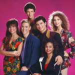 Saved By The Bell (1989) Adult Swim, originally on NBC This show aired on Adult Swim for about a week in 2006. ignore this lol 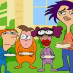 Home Movies (1999) Adult Swim, originally on UPN I really like how this show doesn't sound like it's scripted (in a good way, just like O'Grady, both of these shows were produced by Soup2Nuts). Also, this show was made by Brendon Small, this is not the only time his name will be mentioned here. ignore this lol 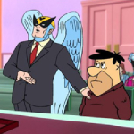 Harvey Birdman, Attorney at Law (2000) Adult Swim I used to hate this show when I was in elementary school, but now I like it. ignore this lol 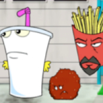 Aqua Teen Hunger Force (2000) Adult Swim I like this show, even though it is INCREDIBLY stupid. ignore this lol 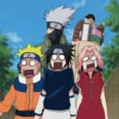 Naruto (2002) Toonami, originally on TV Tokyo This show is just very entertaining, I don't know what else to say. ignore this lol 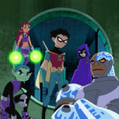 Teen Titans (2003) The "Do You Like Waffles" video was definitely an important part of my early childhood. I also have the theme song for this show on CD, more info on this later. This is the first actual Cartoon Network show on this list lol. ignore this lol 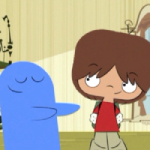 Foster's Home for Imaginary Friends (2004) I like it whenever characters will just stare at each other for a long time and blink and stuff. ignore this lol 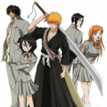 Bleach (2004) Toonami, originally on TV Tokyo This is one of my favorite animes, mainly because I really like its soundtrack. ignore this lol 6teen (2004) originally on Teletoon As I said on my list of favorite Nick shows, I used to watch 6teen on Cartoon Network. I think it's a pretty good show. ignore this lol 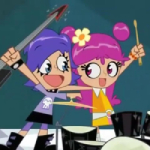 Hi Hi Puffy AmiYumi (2004) Before I watched this show, the only music I would listen to (by choice) would be TV show theme songs (with a few exceptions like Gangnam Style). Puffy (Ami and Yumi, not the weird guy) have been my favorite artists ever for the past 10 years. My favorite album is Nice. by Puffy, and it includes the Teen Titans theme song because it was sung by them. For some reason, this show has a bunch of inflation. ignore this lol 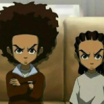 The Boondocks (2005) Adult Swim This show is very funny. I don't know what else it say, it's The Boondocks. ignore this lol 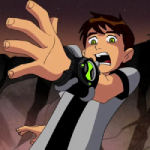 Ben 10 (2005) I think Ben 10 has one of the most interesting concepts for a TV show I've ever seen before. Also, the theme song was produced by Andy Sturmer, who is also the producer of Nice. (the album I mentioned earlier) and a bunch of other songs by Puffy. ignore this lol 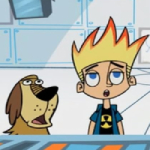 Johnny Test (2005) originally on Kids' WB I actually don't like this show (anymore), but I do have to mention that this show never fails to make me laugh due to it's abundance of sound effects. I am not surprised at all that this show was made by Scott Fellows (creator of Big Time Rush) because Big Time Rush also has a ton of sound effects lol. ignore this lol 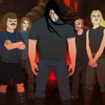 Metalocalypse (2006) Adult Swim This is one of my favorite TV shows ever, it's also one of my comfort shows (the only other one is Happy Tree Friends (Yes, my only two comfort shows include people dying in the most gruesome ways imaginable)). This show was also made by Brendon Small. ignore this lol 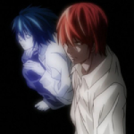 Death Note (2006) Toonami, originally on NTV Another one of my favorite animes. Who doesn't like Death Note (before part 2)? ignore this lol 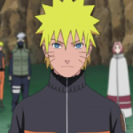 Naruto: Shippuden (2007) Toonami, originally on TV Tokyo As I said on the Disney list, I like Naruto Shippuden. I've only seen it a handful of times on Cartoon Network though. ignore this lol 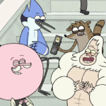 Regular Show (2010) I only really like the episodes where the most arbitrary stuff happens. If the episode is too regular I'll get bored. ignore this lol 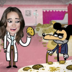 MAD (2010) I still sing the One Direction "Best Song Ever" parody from time to time. ignore this lol 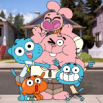 The Amazing World of Gumball (2011) I like how this show uses many different animation mediums, it makes it very interesting. ignore this lol 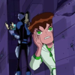 Ben 10: Omniverse (2012) I used to watch this show in the mornings before school; those were the days. ignore this lol 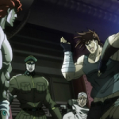 JoJo's Bizarre Adventure (2012) Toonami, originally on Tokyo MX This show is very entertaining. My favorite parts are Part 2, Part 4, and Part 5. I also like Part 7 but that has not been animated yet (as of me typing this right now (or I mean the anime hasn't been released yet? I think the trailer came out but whatever)). ignore this lol 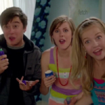 Incredible Crew (2012) I don't care what anyone says, I like this show. I always think about the Annoying Guy on a Plane, Doing Errands with my Mom, So What?, and Don't Disturb the Giant skits. ignore this lol 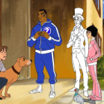 Mike Tyson Mysteries (2014) Adult Swim This show is pretty funny. ignore this lol 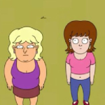 YOLO (2020) Adult Swim This show is very funny. ignore this lol 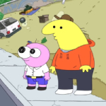 Smiling Friends (2020) Adult Swim To be honest, I stopped liking this show as much after season 3 came out, and a bunch of people were talking about it. This is the end of this list. |
|
View my profiles on: |
 Soundcloud
Soundcloud iTunes
iTunes YouTube
YouTube Instagram
Instagram